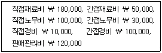
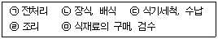

한식조리기능사 (2004-04-04 기출문제)
1과목: 식품위생 및 법규
1. 고운 색깔을 가진 과자를 만들기 위해 착색료를 사용하려고 한다. 다음 중 구체적인 사용기준을 알려면 참고해야 할 것은?
- 식품과학용어집
- 식품성분표
- 학술잡지
- 식품첨가물공전
(정답률: 83%)

2. 식품위생법상 화학적 합성품의 정의는?
- 모든 화학반응을 일으켜 얻은 물질을 말한다.
- 모든 분해반응을 일으켜 얻은 물질을 말한다.
- 화학적 수단에 의하여 원소 또는 화합물에 분해반응 외의 화학반응을 일으켜 얻은 물질을 말한다.
- 원소 또는 화합물에 화학반응을 일으켜 얻은 물질을 말한다.
(정답률: 76%)
3. 식품접객업 중 음식류를 조리, 판매하는 영업으로서 식사와 함께 부수적으로 음주행위가 허용되는 영업은?
- 단란주점영업
- 유흥주점영업
- 휴게음식점영업
- 일반음식점영업
(정답률: 85%)
4. "판매의 목적으로 식품을 제조· 가공한 영업자가 그 식품으로 인해 위생상의 위해가 발생할 우려가 있다고 인정하는 경우" 라면 다음 내용 중 옳은 것은?
- 위생상의 위해가 발생할 우려가 있다는 점만으로는 아무런 조치를 취하지 않아도 된다.
- 이러한 경우는 식품의 위해요소중점관리기준에 따라 처리된다.
- 이러한 자진회수제도는 자동차 등에는 규정되어 있으나 식품과 관련하여서는 식품위생법에 아직 정해진 규정이 없다.
- 영업자는 그 사실을 국민에게 알리고 유통 중인 당해식품 등을 회수하도록 노력하여야 한다.
(정답률: 70%)
5. 영업허가 대상인 것은?
- 식품조사처리업
- 식품소분· 판매업
- 즉석판매제조가공업
- 일반음식점영업
(정답률: 55%)
6. 식품이 미생물의 작용을 받아 분해되는 현상과 거리가 먼 것은?
- 부패(puterifaction)
- 발효(fermentation)
- 변향(flavor reversion)
- 변패(deterioration)
(정답률: 64%)
7. 식품에 있어서의 간접적인 변질현상은?
- 건조나 흡습 등에 의한 물리적 변화
- 온도나 일광에 의한 분해
- 미생물의 번식에 따른 부패
- 공기 중의 산소에 의한 산화현상
(정답률: 38%)
8. 우리나라에서 7 - 9월 중 해수세균에 의해 집중적으로 발생하는 식중독은?
- 클로스트리디움 보툴리늄 식중독
- 장염 비브리오 식중독
- 살모넬라 식중독
- 포도상구균 식중독
(정답률: 75%)
9. 통조림, 병조림과 같은 밀봉식품의 부패가 원인이 되는 식중독과 가장 관계 깊은 것은?
- 포도상구균 식중독
- 클로스트리디움보툴리늄 식중독
- 리스테리아 식중독
- 살모넬라 식중독
(정답률: 83%)
10. 통조림 식품의 통조림 관에서 유래될 수 있는 식중독 원인물질은?
- 주석
- 카드뮴
- 페놀
- 수은
(정답률: 79%)
11. 복어와 모시조개 섭취시 식중독을 유발하는 독성물질이 바르게 연결된 것은?
- 테트로도톡신(Tetrodotoxin), 베네루핀(Venerupin)
- 엔테로톡신(Enterotoxin), 사포닌(Saponin)
- 테트로도톡신(Tetrodotoxin), 듀린(Dhurrin)
- 엔테로톡신(Enterotoxin), 아플라톡신(Aflatoxin)
(정답률: 89%)
12. 섭조개 중독의 원인 물질은?
- 테트로도톡신(tetrodotoxin)
- 콜린(choline)
- 삭시톡신(saxitoxin)
- 베네루핀(venerupin)
(정답률: 86%)
13. 일반적으로 식품의 세균성 식중독 방지와 가장 관계 깊은 처리방법은?
- 예방접종
- 마스크 사용
- 냉장과 냉동
- 방사능물질 오염방지
(정답률: 79%)
14. 히스티딘 식중독을 유발하는 원인 단백질은 어느 것인가?
- 발린
- 히스타민
- 알리신
- 트립토판
(정답률: 83%)
15. 식품의 점착성을 증가시키고 유화 안정성을 좋게 하는 것은?
- 강화제
- 효모
- 팽창제
- 용제
(정답률: 42%)
2과목: 식품학
16. 다음 중 발효 식품은?
- 치즈
- 사이다
- 수정과
- 우유
(정답률: 92%)
17. 식품과 그 저장법의 연결이 잘못된 것은?
- 보리차, 차-배건법
- 당면, 한천-냉동건조법
- 고구마, 무, 배추-움저장
- 햄, 베이컨-CA저장법
(정답률: 72%)
18. 버섯에 대한 일반적인 설명과 거리가 먼 것은?
- 엽록소가 들어 있다.
- 불검화물이 많다.
- 단백질 급원식품은 아니다.
- 비교적 소화율이 낮다.
(정답률: 54%)
19. 황 함유 아미노산은?
- 트레오닌
- 프로린
- 글리신
- 메티오닌
(정답률: 48%)
20. 식품의 가공 또는 저장, 조리 중 품질의 저하를 가져오는 갈색화 반응을 억제하는 방법과 거리가 먼 것은?
- 산소의 제거
- 환원제의 첨가
- 실리콘오일의 첨가
- 효소의 불활성화
(정답률: 64%)
21. 젤 형성을 이용한 식품과 젤 형성 주체성분의 연결이 바르게 된 것은?
- 양갱 - 펙틴
- 도토리묵 - 한천
- 족편 - 젤라틴
- 과일잼 - 전분
(정답률: 75%)
22. 간장이나 된장의 착색은 주로 어느 반응과 관계 깊은가?
- 캐러멜(caramel)화 반응
- 아미노 카르보닐(aminocarbonyl) 반응
- 페놀(phenol) 산화반응
- 아스코르빈산(ascorbic acid) 산화반응
(정답률: 45%)
23. 일반적으로 잼의 설탕함량은?
- 15 - 25%
- 90 - 100%
- 35 - 45%
- 60 - 70%
(정답률: 74%)
24. 전분질 식품은 시간이 경과함에 따라 노화된다. 다음 중 노화를 방지하는 방법과 관계가 적은 것은?
- 유화제를 첨가한다.
- 냉동고에 보관한다.
- 수분함량을 15% 이하로 줄인다.
- 냉장고에 보관한다.
(정답률: 57%)
25. 우유 가공품 중 발효유에 속하는 것은?
- 전지분유
- 가당연유
- 요구르트
- 무당연유
(정답률: 83%)
26. 적자색 채소를 조리할 때 식초나 레몬즙을 약간 넣었다. 가장 관계 깊은 현상은?
- 플라보노이드계 색소가 변색되어 청색으로 된다.
- 안토시아닌계 색소가 더욱 선명하게 유지된다.
- 카로티노이드계 색소가 변색되어 녹색으로 된다.
- 클로로필계 색소가 더욱 선명하게 유지된다.
(정답률: 62%)
27. 다음 근채류 중 생식하는 것 보다 기름에 볶는 조리법을 적용하는 것이 좋은 식품은?
- 당근
- 토란
- 무
- 고구마
(정답률: 86%)
28. 수박에 대한 설명 중 옳지 않은 것은?
- 과육의 색은 안토시안 색소이다.
- 무기질로서 K이 많고 비타민 A, B, C가 소량 들어 있다.
- 과즙은 이뇨 효과가 있고 신장병에 좋다.
- 수분과 당분이 많아서 여름 과실로 적합하다.
(정답률: 51%)
29. 유지의 변패정도를 나타내는 변수가 아닌 것은?
- 카르보닐가
- 요오드가
- 과산화물가
- 산가
(정답률: 53%)
30. 다음 중 효소가 아닌 것은?
- 유당(lactose)
- 말타아제(maltase)
- 펩신(pepsin)
- 레닌(rennin)
(정답률: 58%)
3과목: 조리이론과 원가계산
31. 녹색채소를 데칠 때 소다를 넣어서 생기는 현상이 아닌 것은?
- 채소의 색을 푸르게 고정시킨다.
- 채소의 섬유질을 연화시킨다.
- 비타민 C가 파괴된다.
- 채소의 질감을 유지한다.
(정답률: 53%)
32. 지질의 소화효소는?
- 레닌
- 펩신
- 리파아제
- 아밀라아제
(정답률: 42%)
33. 적혈구 형성시 필수적인 무기질은?
- 칼슘
- 마그네슘
- 인
- 철분
(정답률: 64%)
34. 식이 중 소금을 제한하는 질병과 가장 거리가 먼 것은?
- 통풍
- 고혈압
- 심장병
- 신장병
(정답률: 77%)
35. 식품감별 중 아가미 색깔이 선홍색인 생선은?
- 점액이 많은 생선
- 부패한 생선
- 냉동한 생선
- 신선한 생선
(정답률: 89%)
36. 보리밥, 냉이국, 장조림, 쑥갓나물, 무숙장아찌, 배추김치, 간장 과 같은 식단은 몇 첩 반상인가?
- 7첩 반상
- 3첩 반상
- 9첩 반상
- 5첩 반상
(정답률: 57%)
37. 다음 자료에 의해서 계산하면 제조 원가는?

- ￦ 290,000
- ￦ 470,000
- ￦ 410,000
- ￦ 590,000
(정답률: 61%)
38. 냉동 보관한 식품의 조리방법을 설명한 것 중 맞는 것은?
- 신선도가 떨어지는 식품도 냉동하면 위생상 문제가 되지 않는다.
- 가능한 큰 덩어리 상태로 냉동하였다가 필요시 부분 해동시켜 일정량 사용하고 다시 냉동시킨다.
- 가능한 급속 냉동하여 식품조직의 손상을 적게 한다.
- 국물은 용기에 공간 없이 가득 담아 냉동한다.
(정답률: 81%)
39. 제품의 제조수량 증감에 관계없이 매월 일정액이 발생하는 원가는?
- 체감비
- 비례비
- 변동비
- 고정비
(정답률: 90%)
40. 조리대를 배치할 때 동선을 줄일 수 있는 효율적인 방법 중 잘못된 것은?
- 조리대의 배치는 오른손잡이를 기준으로 생각할 때 일의 순서에 따라 우에서 좌로 배치한다.
- 조리대에는 조리에 필요한 용구나 기기 등의 설비를 가까이 배치한다.
- 식기와 조리용구의 세정장소와 보관 장소를 가까이 두어 동선을 절약시킨다.
- 각 작업공간이 다른 작업의 통로로 이용되지 않도록 한다.
(정답률: 67%)
41. 단체 급식을 성공시키기 위해 고려해야 할 점으로 가장 부적당한 것은?
- 경영자를 위한 경비 절감
- 피급식자의 건강증진
- 급여대상자의 영양 기준량
- 피급식자의 생활시간 조사에 따른 3식의 영양량 배분
(정답률: 73%)
42. 분리된 마요네즈를 재생시키는 방법으로 가장 적합한 것은?
- 기름을 더 넣어 한 방향으로 빠르게 저어준다.
- 레몬즙을 넣은 후 기름과 식초를 넣어 저어준다.
- 분리된 마요네즈를 양쪽 방향으로 빠르게 저어준다.
- 새로운 난황에 분리된 것을 조금씩 넣으며 한 방향으로 저어준다.
(정답률: 69%)
43. 달걀을 이용한 조리식품과 관계가 없는 것은?
- 수란
- 치즈
- 커스터드
- 오믈렛
(정답률: 85%)
44. 달걀에 우유를 섞어 만든 요리가 아닌 것은?
- 오믈렛(Omelet)
- 머랭(Meringue)
- 스크램블드 에그(Scrambled Egg)
- 커스타드(Custard)
(정답률: 70%)
45. 다음 중 각 단체급식의 목적이 잘못 연결된 것은?
- 산업체 급식-건강증진, 생산능률향상
- 병원 급식-체력유지, 병의 회복촉진
- 학교 급식-바람직한 식습관, 사교성 형성
- 복지시설 급식-체력향상, 병의 치료
(정답률: 81%)
46. 향신료와 그 성분이 바르게 된 것은?
- 생강-차비신(chavicine)
- 겨자-알리신(allicin)
- 고추-캡사이신(capsaicin)
- 후추-시니그린(sinigrin)
(정답률: 89%)
47. 꽃게탕을 하면 꽃게 껍질은 붉은색으로 변하는데, 꽃게에 함유된 색소는?
- 루테인(lutein)
- 구아닌(guanine)
- 아스타크산틴(astaxanthin)
- 멜라닌(melanin)
(정답률: 68%)
48. 유지류의 조리원리에 대한 설명 중 맞는 것은?
- 유화액의 형태인 수중 유적형에는(O/W) 우유, 생크림, 마요네즈가, 유중 수적형에는(W/O) 버터, 마가린 등이 있다.
- 유지의 크리밍성은 일반적으로 마가린이 가장 크리밍성이 높고 버터, 쇼트닝의 순으로 크리밍성이 좋다.
- 튀김을 할 때는 열용량이 크고 두꺼운 금속으로 된 직경이 넓은 용기에 많은 양의 기름을 넣고 튀기는 것이 좋다.
- 유지류의 쇼트닝파워는 동물성 지방일수록, 기름의 양이 적을수록, 온도가 낮을수록 증가하며 반죽에 들어가는 물질이 많을수록 증가한다.
(정답률: 58%)
49. 조리효과를 상승하는 향신료의 작용을 묶은 것 중 맞는 것은?
- 착색작용 - 마늘, 생강, 월계수
- 방향작용 - 올스파이스, 계피
- 무향작용 - 파프리카, 레드페퍼
- 식욕증진 작용 - 후추, 겨자, 레드페퍼
(정답률: 67%)
50. 작업장에서 발생하는 작업의 흐름에 따라 시설과 기기가 배치되는데, 작업의 흐름이 순서대로 연결된 것은?(일부 컴퓨터에서 원 문자가 보이지 않은것 같아서 괄호안에 다시 보기를 적어 놨습니다. 참고 하세요.)

- (ㄱ)-(ㄴ)-(ㄷ)-(ㄹ)-(ㅁ)(ㄱ-ㄴ-ㄷ-ㄹ-ㅁ)
- (ㄷ)-(ㄱ)-(ㄹ)-(ㅁ)-(ㄴ)(ㄷ-ㄱ-ㄹ-ㅁ-ㄴ)
- (ㅁ)-(ㄱ)-(ㄹ)-(ㄴ)-(ㄷ)(ㅁ-ㄱ-ㄹ-ㄴ-ㄷ)
- (ㅁ)-(ㄹ)-(ㄴ)-(ㄱ)-(ㄷ)(ㅁ-ㄹ-ㄴ-ㄱ-ㄷ)
(정답률: 81%)
4과목: 공중보건
51. 세계보건기구(WHO)의 기능과 관계없는 사항은?
- 회원국의 기술지원
- 후진국의 경제보조
- 회원국의 자료공급
- 국제적 보건사업의 지휘· 조정
(정답률: 69%)
52. 온열요소가 아닌 것은?
- 기압
- 기류
- 기온
- 기습
(정답률: 78%)
53. 바이러스(Virus)의 감염에 의하여 일어나는 전염병은?
- 장티푸스
- 폴리오
- 세균성 이질
- 파라티푸스
(정답률: 65%)
54. 인공능동면역에 의하여 면역력이 강하게 형성되는 전염병은?
- 디프테리아
- 이질
- 폴리오
- 말라리아
(정답률: 52%)
55. 다음 전염병 중 생후 가장 먼저 예방접종을 실시하는 것은?
- 홍역
- 백일해
- 결핵
- 파상풍
(정답률: 71%)
56. 회충은 인체의 어느 부위에서 기생을 하는가?
- 간
- 큰 창자
- 허파
- 작은 창자
(정답률: 56%)
57. 아포형성균의 멸균에 가장 좋은 방법은?
- 저온소독법
- 일광소독법
- 초고온순간멸균법
- 고압증기멸균법
(정답률: 57%)
58. 채소류 및 과일류에 적당한 소독법은?
- 승홍수
- 알콜소독
- 클로르칼크소독
- 열탕소독
(정답률: 49%)
59. 다음 중 분변소독에 가장 적합한 것은?
- 생석회
- 약용비누
- 과산화수소
- 표백분
(정답률: 77%)
60. 기생충 감염의 중간숙주와 연결이 바르지 못한 것은?
- 무구조충-돼지고기
- 광절열두조충-송어, 연어
- 폐디스토마-가재
- 간디스토마-민물고기
(정답률: 67%)